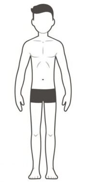
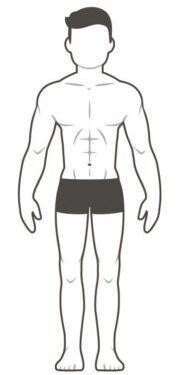
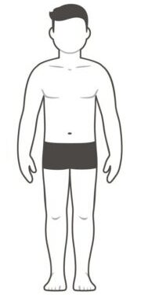
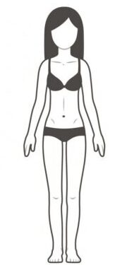
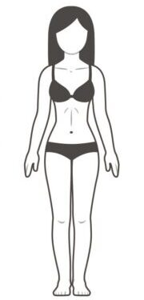
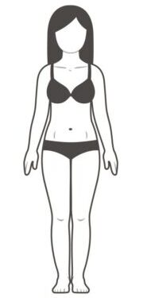

Ваш індекс маси тіла становить:
.
Це говорить про те, що у вас
, згідно таблиці.
Читати більше про ІМТ
Що таке індекс маси тіла, та як його застосовувати?
Індекс маси тіла (ІМТ) — величина, що дозволяє оцінити ступінь відповідності
маси людини та її зросту, й тим самим, непрямо оцінити, чи є маса
недостатньою, нормальною, надмірною.
Формула обчислення індексу маси тіла
де:
- m — маса тіла в кілограмах
- h — зріст у метрах
і вимірюється в кг/м2.
Таблиця ІМТ
За значенням індексу маси тіла популяцію поділяють на кілька категорій, дані про ці
категорії наведені в таблиці:
| ІМТ |
Відповідність між масою людини та її зростом |
| 16 і менше |
Гострий дефіцит маси тіла |
| 16 — 18,5 |
Недостатня маса тіла |
| 18,5 — 25 |
Нормальна маса тіла |
| 25 — 30 |
Надмірна маса тіла |
| 30 — 35 |
Ожиріння першого ступеня |
| 35 — 40 |
Ожиріння другого ступеня |
| 40 і більше |
Ожиріння третього ступеня |
Застереження
Оскільки класична формула ІМТ не враховує вік або стать, розрахунок індексу
маси тіла використовується лише для дорослих чоловіків і жінок — для підлітків
і маленьких дітей він не підходить. Крім цього, таблиця ІМТ не враховує композицію
тіла (тобто, наявність жиру або м’язів).
Спроба оцінити за допомогою ІМТ статури професійних
спортсменів може дати неправильний результат (високе значення індексу в
цьому випадку пояснюється розвинутою мускулатурою).
Відповідно до норвезького дослідження, ідеальним для чоловіків є індекс маси
тіла в 25 — 27. Середня тривалість життя чоловіків з таким ІМТ була максимальною.
Проміжок вашої ваги, відповідно до росту, повинен складати
від кг
до кг.
В той час ваша ідеальна вага за віком і ростом становить:
-
за фомулою Брока:
кг;
-
за формулою Лоренца:
кг:
Читати більше про індекс Брока та Лоренца
Індекс Брока
Індекс Брока (або формула Брока) — це показник для розрахунку нормального
співвідношення зросту і ваги людини.
Індекс Брока був запропонований французьким лікарем Поль Броком у 1871 році
і з того часу використовується, як один з основних показників здоров'я та
фізичної форми людини.
Формула Брока:
-
Формула Брока для чоловіків:
Ідеальна вага = (h - 100) * 0,9
-
Формула Брока для жінок:
Ідеальна вага = (h - 100) * 0,85
де, h — зріст в сантиметрах.
Застереження
Крім того, індекс Брока дає лише грубу усереднену оцінку і з точки зору
медицини, його формула підходить для людей із середньою комплекцією.
Однак, у випадку з дуже високою або дуже низькою людиною, вона перестає працювати.
Індекс Лоренца
Індекс Лоренца (або формула Лоренца) — це математична формула, яка
використовується для визначення нормальної маси тіла людини.
Вона була розроблена німецьким лікарем Лоренцом у 1929 році та є одним з
методів оцінки нормальної маси тіла.
Формула Лоренца:
-
Формула Лоренца для чоловіків:
Ідеальна вага = h - 100 - ((h - 150) / 4)
-
Формула Лоренца для жінок:
Ідеальна вага = h - 100 - ((h - 150) / 2)
де, h — зріст в сантиметрах.
Застереження
Важливо зазначити, що формула Лоренца також є лише орієнтовною оцінкою
нормальної маси тіла і не враховує багатьох інших факторів, таких як вік,
стиль життя, фізична активність та інші.
Розраховуючи результат обчислень за формулою ВМС США, ваш відсоток підшкірного жиру складає:
%,
що складає кr
від вашої загальної маси. Це говорить про те, що ви маєте
, згідно таблиці.
Для чоловіків цей показник повинен бути в діапазоні між 6%
і 19% від загальної маси тіла,
а ідеальним результатом вважається 12%. Для жінок цей діапазон складає від
14 до 25%, а ідеальний 20%.
Згдіно цієї інформації .
Читати більше про відсоток жиру
Тілесний жир
Науковий термін для позначення тілесного жиру – «жирова тканина». Жирова тканина
виконує низку важливих функцій. Його основна мета – накопичувати ліпіди,
з яких організм виробляє енергію. Крім того, він виділяє ряд важливих гормонів та
забезпечує тілу деяку амортизацію, а також ізоляцію.
Вміст жиру (метод ВМС США)
Метод ВМС США – це один з методів визначення вмісту жиру в організмі людини.
Цей метод був розроблений в Національному Інституті Здоров'я США та
використовується для визначення відсотка жиру в тілі.
Цей метод вважається достатньо точним та широко використовується в спортивній
медицині та фітнес-індустрії для визначення показників здоров'я та фітнесу.
Формула ВМС США
-
Для чоловіків:
% жиру = 495 / (1,0324 - 0,19077 * log10(l - n) + 0,15456 * log10(h))
- 450
-
Для жінок:
% жиру = 495 / (1,29579 - 0,35004 * log10(l + r - n) + 0,221 *
log10(h)) - 450
де:
- l — обхват талії у сантиметрах
- n — обхват шиї у сантиметрах
- r — обхват стегон (для жінок)
- h — висота людини у сантиметрах
Таблиця категорій відсотка жиру
У цій таблиці наводяться загальноприйняті норми відсотка жиру для чоловіків і жінок.
| Жінки |
Чоловіки |
Відсоток жирової тканини в організмі |
| 10 — 14% |
3 — 6% |
Мінімальний відсоток жиру для здорової життєдіяльності організму |
| 14 — 17% |
6 — 12% |
Невеликий відсоток жиру. Спортсмен, має підтягнуту атлетичну статуру та рельєфний прес
|
| 17 — 21% |
12 — 16% |
Невеликий відсоток жиру. Любитель спорту, має гарну фізичну форму з наявністю невеликої
кількості жирових запасів |
| 21 — 25% |
16 — 19% |
Середній рівень жиру. Звичайна статура, а також середній рівень фізичної активності |
| 25 — 31% |
19 — 25% |
Прийнятний рівень жиру. Не високий рівень фізичної форми, можлива наявність жиру в
проблемних місцях |
| 31 — 45% |
25 — 40% |
Наявність зайвої ваги. Погана спортивна форма |
| Більше 45% |
Більше 40% |
Надлишковий жир. Відсутня спортивна форма |
Застереження
Важливо зазначити, що метод ВМС США є лише одним з методів визначення вмісту жиру
в тілі та не є ідеальним. Він не враховує індивідуальні особливості організму
та може бути неточним у випадку людей з особливостями фізіології та
комплексу фізичних характеристик.
За типом статури (соматотип) ви .
Вам характерні наступні риси:
- низький рівень підшкірного жиру
- дуже швидкий метаболізм
- тонкі та довгі руки, та ноги, вузькі плечі та грудна клітка
- високий показник витривалості
- надмірне жировідкладення
- уповільнений метаболізм
- великі суглоби (широка кістка)
- низький показник витривалост
Читати більше про соматотип
Що таке соматотип?
Соматотип – це тип тіла людини, який визначається на основі його фізичних характеристик,
таких як розмір кісток, форма і розмір м'язів, відкладення жиру. Цей термін
використовується для класифікації людей за їхньою тілобудовою та фізичними
здібностями.
Типи соматотипу
Існує три основних типи соматотипу: ектоморфний, мезоморфний та ендоморфний.
-
Ектоморфи характеризуються тонким каркасом, довгими кінцівками та малою
кількістю м'язової маси.
-
Мезоморфи мають спортивну тілобудову з розвиненими м'язами і широкими плечима.
-
Ендоморфи мають пропорційно широку талію, велику кількість жиру та менше м'язової маси.
Соматотип використовується в спорті та фітнесі, щоб допомогти людям визначити свої
сильні та слабкі сторони. Це може допомогти при виборі певного виду фізичної активності
або дієти, яка відповідатиме особливостям організму людини.
| Ектоморф |
Мезоморф |
Ендоморф |
|  |
 |
 |
|  |
 |
 |
Ваш показник співвідношення обхвату талії до зросту становить
.
Це говорить пре те, що у вас
ризик абдомінального ожиріння ожиріння в області живота
Як наслідок, ви маєте
ризик розвитку різних захворювань, включаючи серцево-судинні захворювання.
Ваш показник співвідношення обхвату талії до обхвату стегон становить
.
Це говорить про те, що у вас
ризик ожиріння в області стегон.
Як наслідок, ви маєте
ризик розвитку різних захворювань, включаючи цукровий діабет та серцево-судинні захворювання.
Читати більше про індекси центрального ожиріння
Що таке індекси центрального ожиріння
Ряд індексів, що характеризують рівень накопичення жиру навколо внутрішніх органів.
Відомо, що накопичення жиру може відбуватися головним чином під шкірою
(так зване периферичне ожиріння) або навколо внутрішніх органів - центральне
ожиріння. Центральне ожиріння несе у собі набагато більший ризик для здоров'я,
ніж периферичне ожиріння. Люди, які мають центральне ожиріння, набагато частіше мають
комплексну проблему зі здоров'ям, як метаболічний синдром. Індекси центрального ожиріння
дозволяють дати об'єктивну оцінку наявності такої форми ожиріння та уточнити ступінь його
виразності.
Співвідношення обхвату талії до зросту
WHtR (Waist-to-Height Ratio) або відношення обхвату талії до зросту – це метрика, яка
використовується для оцінки розподілу жирової тканини в організмі і пов'язана
з ризиком розвитку різних захворювань, включаючи
серцево-судинні захворювання та цукровий діабет.
Формула для розрахунку WHtR виглядає так:
WHtR = Окружність талії (см) / зріст (см)
Норма цього індексу становить < 0.5 чоловікам і жінок.
Застереження
Важливо, що WHtR є лише однією з метрик оцінки здоров'я і не є єдиним показником.
Співвідношення обхвату талії до обхвату стегон
WHR (англ. Waist-to-Hip Ratio) або відношення обхвату талії до обхвату
стегон – це ще один показник, який використовується
для оцінки розподілу жирової тканини в організмі.
Формула для розрахунку WHR виглядає так:
WHR = Окружність талії (см) / окружність стегон (см)
У нормі цей індекс < 0.85 для жінок та < 1.0 для чоловіків.
Застереження
Однак, важливо пам'ятати, що оцінка здоров'я має бути всебічною, і WHR
слід розглядати разом з іншими показниками та
звернутися до лікаря для більш точної оцінки та консультації.